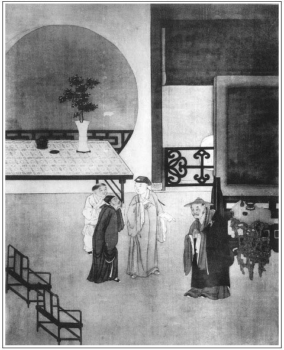

張回此回單為永福寺作地。何則？永福寺，金、瓶、梅歸根之所。不寫為守備香火，則金蓮亦不能葬此，春梅亦不來此。使止寫守備香火，而西門無因，不幾無因，而果顧客失主平？故用千金喜捨，總為後文眾人俱歸於此也。
如瓶兒死於梵僧藥，而藥由永福寺。金蓮、敬濟葬於寺中，春梅逢月娘於寺內，而玉樓又因永福寺見李衙內。是眾人齊歸於此，實同散於此也。安得不特特寫一重修之千金，出於西門氏乎！
接寫二尼印經，相映成趣。見不反本篤家，重倫好禮，雖千金之施，何益身命？止足為敗亡之因。且豈但千金無益，即再捨些，亦不過如此而已，點醒世人無限。笑回嗔，蓋順筆照管金蓮、敬濟初得手情事，又點明不能放膽，以為西門死後地步也。文字點染之妙如此。
寫金蓮、敬濟情事，早於永福寺化緣之後，見金蓮不知死也。
詩曰：
野寺根石壁，諸龕遍崔巍。
前佛不復辨，百身一莓苔。
惟有古殿存，世尊亦塵埃。
如聞龍象泣，足令信者哀。
公為領兵徒，咄嗟檀施開。
吾知多羅樹，卻倚蓮花台。
諸天必歡喜，鬼物無嫌猜。張旁小玉眼中俱出。

話說那山東東平府地方，向來有個永福禪寺，起建自梁武帝普通二年，開山是那萬回老祖。怎麼叫做萬回老祖？因那老祖做孩子的時節，才七八歲，有個哥兒從軍邊上，音信不通，不知生死。他老娘思想大的孩兒，時常在家啼哭。忽一日，孩子問母親，說道：「娘，這等清平世界，咱家也盡挨得過，為何時時掉下淚來？娘，你說與咱，咱也好分憂的。」張旁二句哭盡天下父母。老娘就說：「小孩子，你那裡知道。自從你老頭兒去世，你大哥兒到邊上去做了長官，四五年，信兒也沒一個。不知他生死存亡，教我老人家怎生吊的下！」說著，又哭起來。那孩子說：「早是這等，有何難哉！娘，如今哥在那裡？咱做弟郎的，早晚間走去抓尋哥兒，討個信來，回復你老人家，卻不是好？」那婆婆一頭哭，一頭笑起來，說道：「怪呆子，你哥若是一百二百里程途，便可去的，直在那遼東地面，去此一萬餘里，就是好漢子，也走四五個月才到哩，你孩兒家怎麼去的？」那孩子就說：「嗄，若是果在遼東，也終不在個天上，我去尋哥兒就回也。」只見他把靸鞋兒繫好了，把直掇兒整一整，望著婆兒拜個揖，一溜煙去了。那婆婆叫之不應，追之不及，愈添愁悶。也有鄰舍街坊、婆兒婦女前來解勸，說道：「孩兒小，怎去的遠？早晚間自回也。」因此，婆婆收著兩眶眼淚，悶悶坐的。看看紅日西沉，那婆婆探頭探腦向外張望，只見遠遠黑魆魆影兒裡，有一個小的兒來也。那婆婆就說：「靠天靠地，靠日月三光。若的俺小的兒子來了，也不枉了俺修齋吃素的念頭。」只見那萬回老祖忽地跪到跟前說：「娘，你還未睡哩？咱已到遼東抓尋哥兒，討的平安家信來也。」繡眉荒唐得妙。婆婆笑道：「孩兒，你不去的正好，免教我老人家掛心。只是不要吊謊哄著老娘。那有一萬里路程朝暮往還的？」孩兒道：「娘，你不信麼？」一直卸下衣包，取出平安家信，果然是他哥兒手筆。又取出一件汗衫，帶回漿洗，也是婆婆親手縫的，毫釐不差。因此哄動了街坊，叫做「萬回」。日後捨俗出家，就叫做「萬回長老」。果然道德高妙，神通廣大。曾在後趙皇帝石虎跟前，吞下兩升鐵針，又在梁武皇殿下，在頭頂上取出舍利三顆。因此敕建永福禪寺，張夾特為永福寺一描，眾人將散矣。做萬回老祖的香火院，正不知費了多少錢糧。正是：
神僧出世神通大，聖主尊隆聖澤深。
不想歲月如梭，時移事改。那萬回老祖歸天圓寂，就有些得皮得肉的上人們，一個個多化去了。只有幾個憊賴和尚，養老婆，吃燒酒，繡眉是和尚正課。甚事兒不弄出來！不消幾日兒，把袈裟也當了，鍾兒、磬兒都典了，殿上椽兒、磚兒、瓦兒換酒吃了。弄的那雨淋風刮，佛像兒倒的，荒荒涼涼，將一片鐘鼓道場，忽變作荒煙衰草。三四十年，那一個肯扶衰起廢！張夾小小一段炎涼。不想有個道長老，原是西印度國出身，因慕中國清華，打從流沙河、星宿海走了八九個年頭，才到中華區處。迤邐來到山東，就卓錫在這個破寺裡，面壁九年，不言不語，繡眉是佛法，亦是文詮。真個是：
佛法原無文字障，工夫向好定中尋。
忽一日發個念頭，說道：「呀，這寺院坍塌的不成模樣了，這些蠢狗才攮的禿驢，止會吃酒吃飯，把這古佛道場弄得赤白白地，豈不可惜！到今日，咱不做主，那個做主？咱不出頭，那個出頭？張旁二語哭盡天下在事人。況山東有個西門大官人，居錦衣之職，他傢俬巨萬，富比王侯，前日餞送蔡御史，曾在咱這裡擺設酒席。他見寺宇傾頹，就有個鼎建重新的意思。若得他為主作倡，管情早晚間把咱好事成就也。咱須去走一遭。」當時喚起法子徒孫，打起鐘鼓，舉集大眾，上堂宣揚此意。那長老怎生打扮？但見：
身上禪衣猩血染，雙環掛耳是黃金。
手中錫杖光如鏡，百八明珠耀日明。
開覺明路現金繩，提起凡夫夢亦醒。
龐眉紺發銅鈴眼，道是西天老聖僧。
長老宣揚已畢，就叫行者拿過文房四寶，寫了一篇疏文。好長老，真個是古佛菩薩現身。於是辭了大眾，著上禪鞋，戴上個斗笠子，一壁廂直奔到西門慶家裡來。
且說西門慶辭別了應伯爵，走到吳月娘房內，把應伯爵薦水秀才的事體說了一番，就說道：「咱前日東京去，多得眾親朋與咱把盞，如今少不的也要整酒回答他。今日到空閒，就把這事兒完了罷。」當下就叫了玳安，吩咐買辦嗄飯之類。又吩咐小廝，分頭去請各位。一面拉著月娘，走到李瓶兒房裡來看官哥。李瓶兒笑嘻嘻的接住了，就叫奶子抱出官哥兒來。只見眉目稀疏，就如粉塊妝成，笑欣欣，直攛到月娘懷裡來。月娘把手接著，抱起道：「我的兒，恁的乖覺，長大來，定是聰明伶俐的。」又向那孩子說：「兒，長大起來，恁地奉養老娘哩！」李瓶兒就說：「娘說那裡話。假饒兒子長成，討的一官半職，也先向上頭封贈起，那鳳冠霞帔，穩穩兒先到娘哩。」繡眉語出至誠，不可看作尋常討好。西門慶接口便說：「兒，你長大來還掙個文官。不要學你家老子做個西班出身，──雖有興頭，卻沒十分尊重。」繡眉期望中更多賣弄，小人口角爾爾，奈折福何？正說著，不想潘金蓮在外邊聽見，張旁偏與他聽見。不覺怒從心上起，繡旁芥菜子偏落在繡花針眼裡。就罵道：「沒廉恥、弄虛脾的臭娼根，偏你會養兒子！也不曾經過三個黃梅、四個夏至，又不曾長成十五六歲，出幼過關，上學堂讀書，還是個水泡，與閻羅王合養在這裡的，張夾一罵瓶兒。怎見的就做官，就封贈那老夫人？張夾二罵月娘。怪賊囚根子，沒廉恥的貨，怎的就見的要做文官，不要像你！」繡眉雖發於妒心，亦是正論。張夾一罵西門，妒愈急而謀愈急矣。正在嘮嘮叨叨，喃喃吶吶，一頭罵，一頭著惱的時節，只見玳安走將進來，叫聲「五娘」，說道：「爹在那裡？」潘金蓮便罵：「怪尖嘴的賊囚根子，那個曉的你什麼爹在那裡！怎的到我這屋裡來？他自有五花官誥的太奶奶老封婆，八珍五鼎奉養他的在那裡，繡眉遷怒處使聞者突然，極扯淡，又煞甚要緊。那裡問著我討！」那玳安就曉的不是路了，望六娘房裡就走。繡旁知局。走到房門前，打個咳嗽，朝著西門慶道：「應二爹在廳上。」西門慶道：「應二爹，才送的他去，又做甚？」玳安道：「爹出去便知。」
西門慶只得撇了月娘、李瓶兒，走到外邊。見伯爵，正要問話，只見那募緣的道長老已到西門慶門首了。高聲叫：「阿彌陀佛！這是西門老爹門首麼？那個掌事的管家與吾傳報一聲，說道：扶桂子，保蘭孫，求福有福，求壽有壽。繡眉四語刺人心苗。張夾得竅。──東京募緣的長老求見。」原來，西門慶平日原是一個撒漫使錢的漢子，又是新得官哥，心下十分歡喜，也要幹些好事，保佑孩兒。小廝們通曉得，並不作難，一壁廂進報西門慶。西門慶就說：「且叫他進來看。」不一時，請那長老進到花廳裡面，打了個問訊，說道：「貧僧出身西印度國，行腳到東京汴梁，卓錫在永福禪寺，面壁九年，頗傳心印。止為那宇殿傾頹，琳宮倒塌，貧僧想起來，為佛弟子，自應為佛出力，因此上貧僧發了這個念頭。前日老檀越餞行各位老爹時，悲憐本寺廢壞，也有個良心美腹，要和本寺作主。那時，諸佛菩薩已作證盟。貧僧記的佛經上說得好：如有世間善男子、善女人以金錢喜捨莊嚴佛像者，主得桂於蘭孫，端嚴美貌，日後早登科甲，蔭子封妻之報。張夾一語中的。故此特叩高門，不拘五百一千，要求老檀那開疏發心，成就善果。」就把錦帕展開，取出那募緣疏簿，雙手遞上。不想那一席話兒，早已把西門慶的心兒打動了，不覺的歡天喜地，繡眉和尚語，自是募化口頭禪，恰湊著閨房摩弄期願心，當是因緣拍合。接了疏簿，就叫小廝看茶。揭開疏簿，只見寫道：
伏以白馬駝經開象教，竺騰衍法啟宗門。大地眾僧，無不皈依佛祖；三千世界，盡皆蘭若莊嚴。看此瓦礫傾頹，成甚名山勝境？若不慈悲喜捨，何稱佛子仁人？今有永福禪寺，古佛道場，焚修福地。啟建自梁武皇帝，開山是萬回祖師。規制恢弘，彷彿那給孤園黃金鋪地；雕樓精製，依稀似衹洹捨白玉為階。高閣摩空，旃檀氣直接九霄雲表；層基亙地，大雄殿可容千眾禪僧。兩翼巍峨，儘是琳宮紺宇；廊房潔淨，果然精勝洞天。那時鍾鼓宣揚，盡道是寰中佛國；只這緇流濟楚，卻也像塵界人天。那知歲久年深，一瞬時移事換。莽和尚縱酒撒潑，毀壞清規；呆道人懶惰貪眠，不行打掃。繡眉一對廢寺絕好門聯。漸成寂寞，斷絕門徒；以致淒涼，罕稀瞻仰。兼以鳥鼠穿蝕，那堪風雨漂搖。棟宇摧頹，一而二，二而三，支撐靡計；牆垣坍塌，日復日，年復年，振起無人。張夾午夜晨鐘。朱紅欞隔，拾來煨酒煨茶；合抱棟樑，拿去換鹽換米。風吹羅漢金消盡，雨打彌陀化作塵。吁嗟乎！
金碧焜炫，一旦為灌莽荊榛。雖然有成有敗，終須否極泰來。幸而有道長老之虔誠，不忍見梵王宮之廢敗。發大弘願，遍叩檀那。伏願鹹起慈悲，盡興惻隱。樑柱椽楹，不拘大小，喜捨到高題姓字；銀錢布幣，豈論豐贏，投櫃入疏簿標名。仰仗著佛祖威靈，福祿壽永永百年千載；倚靠他伽藍明鏡，父子孫個個厚祿高官。瓜瓞綿綿，森挺三槐五桂；門庭奕奕，輝煌金阜錢山。凡所營求，吉祥如意。疏文到日，各破慳心。謹疏。
西門慶看畢，恭恭敬敬放在桌兒上面，對長老說：「實不相瞞，在下雖不成個人家，也有幾萬產業，繡眉謀已便誇，的真市井蘭亭。忝居武職。不想偌大年紀，未曾生下兒子，有意做些善果。去年第六房賤內生下孩子，咱萬事已是足了。偶因餞送俺友，得到上方，因見廟字傾頹，實有個捨財助建的念頭。蒙老師下顧，那敢推辭！」拿著兔毫妙筆，正在躊躇之際，應伯爵就說：「哥，你既有這片好心為侄兒發願，何不一力獨成，繡眉伯爵一片諛腸，奈何長老卻無保頭錢奉送。也是小可的事體。」西門慶拿著筆笑道：「力薄，力薄。」伯爵又道：「極少也助一千。」西門慶又笑道：「力薄，力薄。」那長老就開口說道：「老檀越在上，不是貧僧多口，我們佛家的行徑，只要隨緣喜捨，終不強人所難，但憑老爹發心便是。此外親友，更求檀越吹噓吹噓。」西門慶說道：「還是老師體量。少也不成，就寫上五百兩。」張夾楊家物乎？花家物乎？抑苗家物乎？擱了兔毫筆，那長老打個問訊謝了。西門慶又說：「我這裡內官太監、府縣倉巡，一個個都與我相好的，我明日就拿疏簿去要他們寫。寫的來，就不拘三百二百、一百五十，管情與老師成就這件好事。」當日留了長老素齋，相送出門。正是：張夾永福寺修理停當，單等金蓮矣。
慈悲作善豪家事，保福消災父母心。
西門慶送了長老，轉到廳上，與應伯爵坐地，道：「我正要差人請你，你來的正好。我前日往東京，多謝眾親友們與咱把盞，今日安排小酒與眾人回答，要二哥在此相陪，不想遇著這個長老，鬼混了一會兒。」張夾一團恭敬，忽換此二字，五百兩冰消矣。伯爵便說道：「好個長老，想是果然有德行的。他說話中間，連咱也心動起來，做了施主。」西門慶說道：「你又幾時做施主來？疏簿又是幾時寫的？」繡旁呆致。應伯爵笑道：「哥，你不知道，佛經上第一重的是心施，第二法施，第三才是財施。張夾大掃西門，實是棒喝。難道我從旁攛掇的，不當個心施？」繡眉不獨韻趣，伯爵直能自佔地位。西門慶笑道：「二哥，只怕你有口無心哩。」張夾棒喝。兩人拍手大笑，應伯爵就說：「小弟在此等待客來，哥有正事，自與嫂子商議去。」
只見西門慶別了伯爵，轉到內院裡頭，只見那潘金蓮嘮嘮叨叨，沒揪沒采，不覺的睡魔纏擾，打了幾個噴涕，走到房中，倒在象牙床上睡去了。李瓶兒又為孩子啼哭，自與奶子、丫鬟在房中坐地，看官哥。只有吳月娘與孫雪娥兩個看著整辦嗄飯。西門慶走到面前坐的，就把道長老募緣與自己開疏的事，備細說了一番。又把應伯爵耍笑打覷的話也說了一番。歡天喜地，大家嘻笑了一會。那吳月娘畢竟是個正經的人，不慌不忙說下幾句話兒，到是西門慶頂門上針。正是：
妻賢每至雞鳴警，款語常聞藥石言。
月娘說道：「哥，你天大的造化，生下孩兒。你又發起善念。廣結良緣，豈不是俺一家兒的福分！只是那善念頭怕他不多，那惡念頭怕他不盡。繡眉真是道學種子。哥，你日後那沒來回沒正經養婆娘、沒搭煞貪財好色的事體少幹幾樁兒，卻不攢下些陰功，與那小孩子也好！」西門慶笑道：「你的醋話兒又來了。卻不道天地尚有陰陽，男女自然配合。今生偷情的、苟合的，都是前生分定，姻緣簿上注名，今生了還，難道是生剌剌胡搊亂扯，歪廝纏做的？繡眉自信處卻說得道理鑿鑿，是以聖人惡佞舌。張夾此意誤盡青赤。咱聞那佛祖西天，也止不過要黃金鋪地，陰司十殿，也要些楮鏹營求。咱只消盡這傢俬廣為善事，就使強姦了姮娥，和奸了織女，拐了許飛瓊，盜了西王母的女兒，也不減我潑天的富貴。」繡眉口角逼真市井，妙。張夾該死。月娘笑道：「狗吃熱屎，原道是個香甜的；生血掉在牙兒內，怎生改得！」繡眉絕妙比方，更趣絕。正在笑間，只見王姑子同了薛姑子，提了一個盒兒，直闖進來，朝月娘打問訊，又向西門慶拜了拜，說：「老爹，你倒在家裡。」月娘一面讓坐。
看官聽說，原來這薛姑子不是從幼出家的，少年間曾嫁丈夫，在廣成寺前賣蒸餅兒生理。繡眉畢竟原有善緣。張夾又是金蓮舊稿。不料生意淺薄，與寺裡的和尚、行童調嘴弄舌，眉來眼去，刮上了四五六個。常有些饅頭齋供拿來進奉他，又有那應付錢與他買花，開地獄的布，送與他做裹腳。繡眉敘得歷落，卻又是和尚等本色。他丈夫那裡曉得！以後，丈夫得病死了，他因佛門情熟，就做了個姑子。專一在士夫人家往來，包攬經懺。又有那些不長進、要偷漢子的婦人，叫他牽引。聞得西門慶家裡豪富，侍妾多人，思想拐些用度，因此頻頻往來。張眉極力將佛門一貶。須知寫開緣簿為普靜作收煞地，不為勸人佈施地也。有一隻歌兒道得好：
尼姑生來頭皮光，拖子和尚夜夜忙。三個光頭好像師父師兄並師弟，繡旁妙。只是鐃鈸原何在裡床？繡眉奇想。
薛姑子坐下，就把小盒兒揭開，說道：「咱每沒有甚麼孝順，拿得施主人家幾個供佛的果子兒，權當獻新。」月娘道：「要來竟自來便了，何苦要你費心！」只見潘金蓮睡覺，聽得外邊有人說話，又認是前番光景，便走向前來聽看。見李瓶兒在房中弄孩子，因曉得王姑於在此，也要與他商議保佑官哥。因一同走到月娘房中。大家道個萬福，各各坐地。西門慶因見李瓶兒來，又把那道長老募緣與自家開疏捨財，替官哥求福的事情，又說一番。不想惱了潘金蓮，抽身竟走，喃喃噥噥，竟自去了。那薛姑子聽了，就站將起來，合掌叫聲：「佛阿！老爹你這等樣好心作福，怕不的壽年千歲，五男二女，七子團圓。只是我還有一件說與你老人家──這個因果費不甚多，更自獲福無量。咦，老檀越，你若幹了這件功德，就是那老瞿曇雪山修道，迦葉尊散發鋪地，二祖師投崖飼虎，給孤老滿地黃金，也比不得你功德哩！」西門慶笑道：「姑姑且坐下，細說甚麼功果，我便依你。」薛姑子就說：「我們佛祖留下一卷《陀羅經》，專一勸人生西方淨土。因為那肉眼凡夫不生尊信，故此佛祖演說此經，勸你專心念佛，竟往西方，永永不落輪迴。那佛祖說的好，如有人持誦此經，或將此經印刷抄寫，轉勸一人至千萬人持誦，獲福無量。況且此經裡面又有《護諸童子經》兒，凡有人家生育男女，必要從此發心，方得易長易養，災去福來。如今這副經板現在，只沒人印刷施行。老爹只消破些工料印上幾千卷，裝釘完成，普施十方。那個功德真是大的緊。」西門慶道：「這也不難，只不知這一卷經要多少紙札，多少裝釘，多少印刷，有個細數才好動彈。」薛姑子又道：「老爹，你那裡去細細算他，繡眉夾帳背手，包在一句中。止消先付九兩銀子，叫經坊裡印造幾千萬卷，裝釘完滿，以後一攪果算還他就是了。」
正說的熱鬧，張夾又是一段姑子。只見陳敬濟要與西門慶說話，尋到卷棚底下，剛剛湊巧遇著了潘金蓮憑欄獨惱。猛抬頭兒見了敬濟，就是貓兒見了魚鮮飯一般，不覺把一天愁悶都改做春風和氣。繡眉煩惱中見了歡喜冤家，固火炕一劑清涼飲。兩個見沒有人來，就執手相偎，剝嘴咂舌頭。兩個肉麻頑了一回，又恐怕西門慶出來撞見，連算帳的事情也不提了。一雙眼又像老鼠兒防貓，左顧右盼，要做事又沒個方便，繡眉情事如畫。只得一溜煙出去了。張夾正文如此幾句。
且說西門慶聽了薛姑子的話頭，不覺又動了一片善心，就叫玳安拿拜匣，取出一封銀子，準準三十兩，便交付薛姑子與王姑子：「即便同去經坊裡，與我印下五千卷經，待完了，我就算帳找他。」正話間，只見書僮忙忙來報道：「請的各位客人都到了。」少不的是吳大舅、花大舅、謝希大、常峙節這一班。西門慶忙整衣出外迎接升堂。就叫小廝擺下桌兒，請眾人一行兒分班列次，各敘長幼坐的。不一時，大魚大肉、時新果品，一齊兒捧將出來。只見酒逢知己，形跡都忘。猜枚的、打鼓的、催花的，三拳兩謊的，歌的歌，唱的唱，頑不盡少年場光景，說不了醉鄉里日月。繡眉只以幾句便了酒中情景，是文章捷收法。正是：
秋月春花隨處有，賞心樂事此時同。
文回文禹門云：此一回西門慶頗發善心，或有以為修德獲福，為善降祥，理之常也。何以西門慶家，此後日敗一日，反不如以前不為善時之蒸蒸也？豈為善不足恃耶？或又以為西門慶固可與為善者，惜無正經人引誘之，明白人勉勵之，賢內助勸誡之，至此時方為善，蓋已遲矣。予笑語之曰：爾等以修廟為善事耶？以印經為善舉耶？僧尼姑謂之善可也，佛菩薩亦謂之善，是佛菩薩全是一片私心。有人為我蓋房屋，我便保佑之，有人為我傳言語，我即庇護之。世間清正官府尚不受罪人之財物而薄其罪，乃佛菩薩而可以貨取乎？人世有此僧尼姑，天壤無此佛菩薩也。故人有以修廟請者，則告以修文廟可也，有以印經請者，則告以印五經可也。
然則西門慶之所為，不得謂之善，更不必問其財之所由來也。強盜殺人放火，不畏王章，不講天理。一旦居然落網，置有田產室家，於是見囚犯而驚心，遇官府而叩首，彼蓋有所畏而然，遂謂之改過自新可乎？平居非賭即嫖，訛人之錢，賴人之物。一旦枵然無食，作出巧言令色，於是告親戚以知非，尋朋友而認錯，彼蓋有所求而然，遂謂之前愆晚蓋可乎？西門慶者，何異於斯！而況萬惡淫為首，豈修廟印經所能贖乎？有子萬事足，豈修廟印經所能祈乎？
伯爵極力奉承，而以鬼混一語了之。月娘婉言勸勉，而以醋話一語拒之。仍以偷人婦女，視為前世姻緣，辱及神仙，無礙潑天富貴，此其人尚可與言善乎？故下文即接金蓮之不服，敬濟之追蹤。作者若曰：即此一人之案，恐非蓋廟刷經之所能了結也。
按：此評寫於光緒六年（1880）正月三十日。